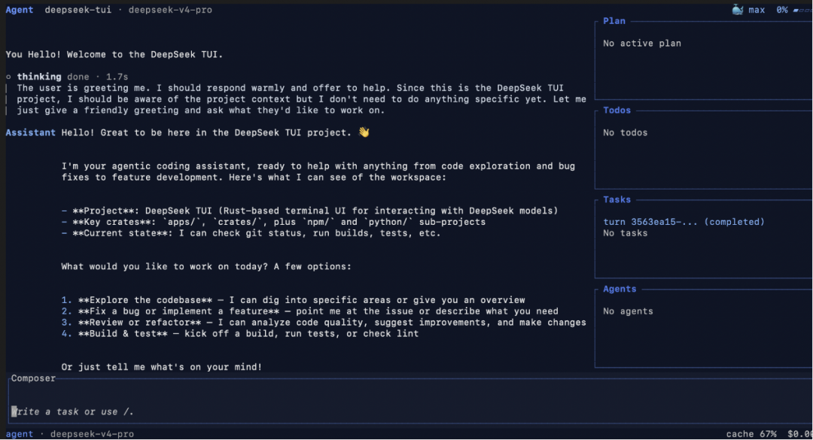
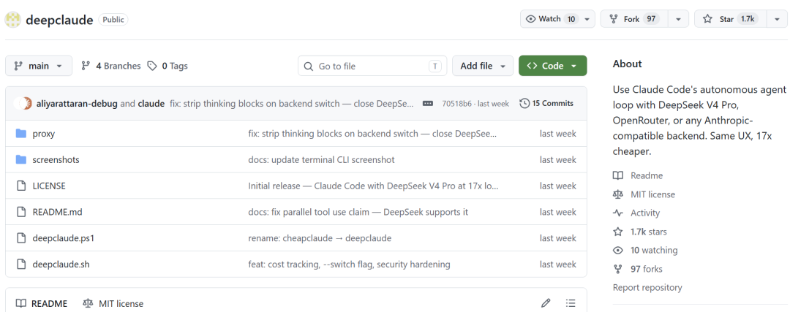
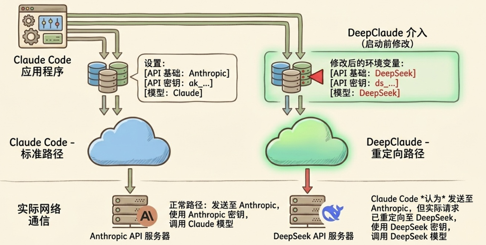
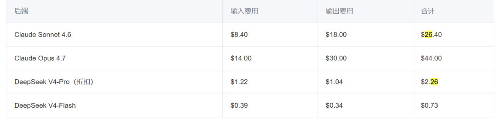
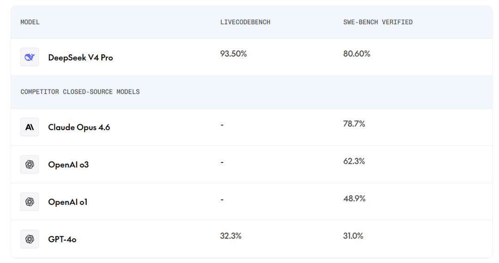
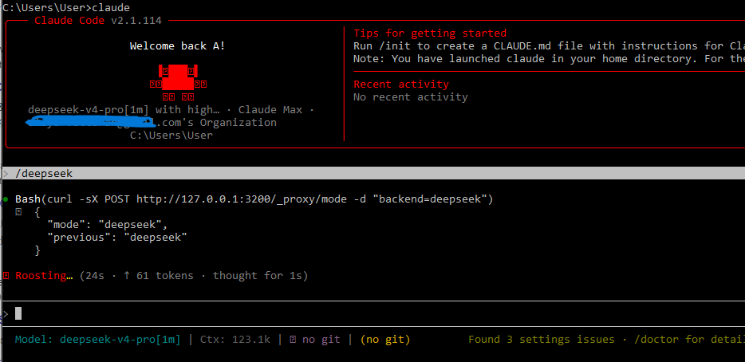
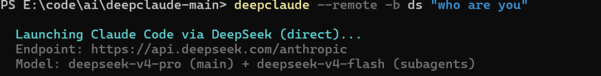
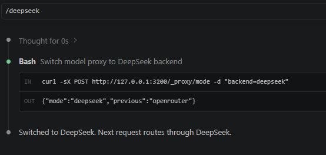
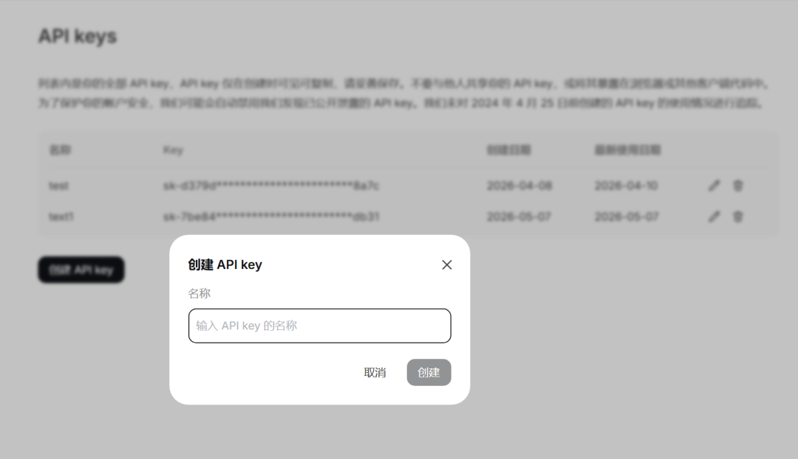
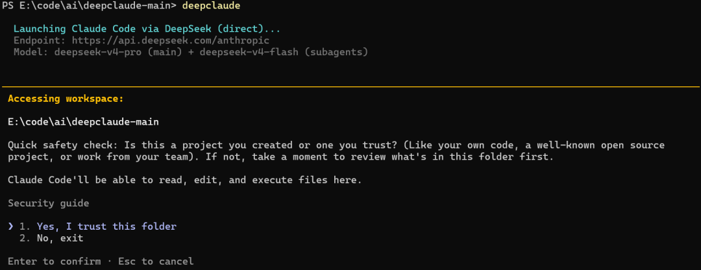

Claude Code是目前公认最强的AI编程代理，但一个月要200美元外加使用限制。
因此很多人都在找更便宜的替代方案。
我前几天分享了一个美国小哥写的DeepSeek-TUI，算是DeepSeek版的Claude Code。

结果评论区有人问：为啥不直接用Claude Code对接DeepSeek V4 Pro？
其实我也想这么干，但Anthropic最近收紧了第三方模型的接入限制。
Claude Desktop 和 Claude Code CLI 的新版本都加了模型ID白名单校验，只允许官方模型通过。
原本能用的第三方替代方案，比如DeepSeek V4，都被挡在门外了。
不过办法总比困难多。
又有个美国人站出来了，写了个叫deepclaude的开源项目，给出了另一种解决方案。

它其实就是把Claude Code的API后端换成DeepSeek V4 Pro、OpenRouter或其他兼容Anthropic的后端。
听起来有点绕，但原理很简单。
Claude Code会读取几个环境变量，来决定、把API请求发到哪、用什么密钥、调用哪个模型。

deepclaude做的事，就是在启动前把这些变量临时改掉。
让Claude Code以为自己在跟Anthropic通信，实际上请求已经转发到了DeepSeek的服务器。
整个过程，Claude Code本身不需要任何改动。
你可能会问：前面不是说有白名单校验吗？怎么还能绕过？
其实deepclaude是在Claude Code启动之前就改好了环境变量，所以Claude Code根本不知道自己在跟谁通信，它只认环境变量里的地址。
这个换脑动作带来的最大好处，就是省钱。
01 成本对比
按照项目README里的数据，DeepSeek V4 Pro的输出token价格是15/M。
算下来，deepclaude能把成本压到原来的1/17。
还有人在腾讯云上做过更大规模的测试。
400万tokens的请求，用Claude Opus要花2.3。

02 性能表现
当然，成本不是唯一要考虑的。
DeepSeek V4 Pro在LiveCodeBench上的得分是93.5%，这个成绩已经相当接近Claude Opus的水平。

80%的常规任务用它问题不大。
剩下20%的复杂推理，还是建议切换回Anthropic的后端。
也就是说，日常写代码、改bug这些事，DeepSeek完全够用。但遇到特别复杂的架构设计、算法优化，还是得靠Claude Opus。
除了省钱，deepclaude还有一个很实用的功能。
它支持在会话中实时切换后端。
你可以在Claude Code里直接输入/deepseek、/anthropic或/openrouter这样的斜杠命令。
不需要重启会话，就能在不同后端之间切换。

这个功能是通过一个本地代理服务器实现的。
它运行在localhost:3200，拦截所有API调用，再根据当前配置转发到对应的后端。
除了DeepSeek，deepclaude还支持OpenRouter和Fireworks AI。
OpenRouter是个聚合平台，可以接入各种模型，价格和DeepSeek一样，都是0.87/M输出。
当然，deepclaude也有一些限制。
目前还不支持图像输入。
原因是DeepSeek的Anthropic兼容端点不支持图像。
所以如果你需要Claude Code处理截图、UI设计稿这类视觉任务，还是得切回Anthropic的后端。
另外，MCP服务器工具也不支持。
Anthropic的提示缓存（cache_control）会被忽略。
不过DeepSeek有自己的自动上下文缓存机制，重复请求的成本会更低。
除了基本的CLI使用，deepclaude还支持远程控制模式。
加上--remote参数，它会输出一个https://claude.ai/code/session_...的URL。
你可以在手机、平板或任何浏览器里打开这个会话。

虽然远程控制需要Anthropic的bridge来建立WebSocket连接，但模型调用仍然走的是你配置的后端。
如果你用的是VS Code或Cursor，还可以把它配置成终端profile。
这样就能直接从IDE里启动deepclaude，不用每次都切到外部终端。
项目还支持键盘快捷键绑定。
比如Ctrl+Alt+D切换到DeepSeek，Ctrl+Alt+A切换回Anthropic。

如果你也想试一下，上手其实很简单。
01 首先浏览器打开platform.deepseek.com，确保还有余额，拿到API密钥备用。

02 然后在终端里设置环境变量。
Windows用 PowerShell 设置环境变量。
setx DEEPSEEK_API_KEY "API密钥"
macOS/Linux打开cmd执行下面的命令设置环境变量。
export DEEPSEEK_API_KEY="API密钥"
03 安装之前用git代码下载到自己的电脑上。
git clone https://github.com/aattaran/deepclaude.git
04 执行命令安装。
用 Windows 的朋友打开 PowerShell 执行下面的命令安装 。
cd deepclaude
Copy-Item deepclaude.ps1 "$env:USERPROFILE\.local\bin\deepclaude.ps1"
macOS/Linux 就打开 cmd 复制下面的命令安装。
cd deepclaude
chmod +x deepclaude.sh
sudo ln -s "$(pwd)/deepclaude.sh" /usr/local/bin/deepclaude
05 最后直接运行deepclaude，就会用DeepSeek V4 Pro启动Claude Code。

整个过程不需要修改Claude Code的任何配置，退出后环境变量也会自动恢复。
写在最后
deepclaude做的事就是帮你省钱。
让你在Claude Code里用更便宜的DeepSeek V4 Pro。
DeepSeek和Anthropic Claude Opus还有一定差距，这个要承认。
但80%的任务，用DeepSeek来处理已经足够了。
最后再提醒一下，图像输入、MCP支持这些目前都不行，大家根据自己的需求选择使用。
项目基于MIT协议开放，感兴趣的同学可以去GitHub仓库看看源码和文档。
开源地址：https://github.com/aattaran/deepclaude
既然看到这了，欢迎随手点赞、在看、转发，也可以给我个星标⭐，接收最新的文章，我们下期见！